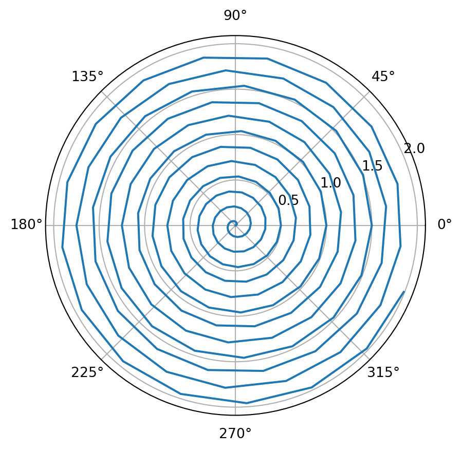
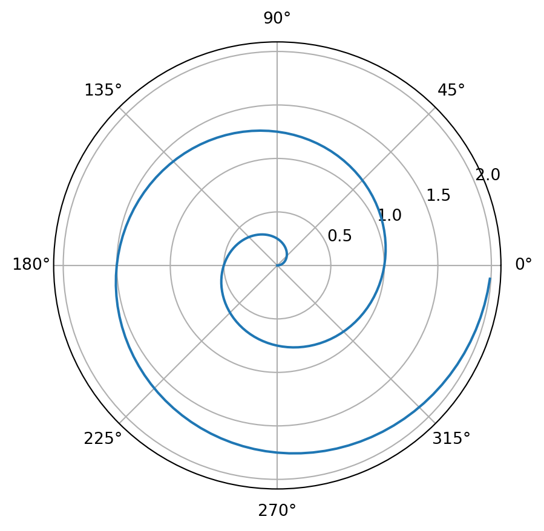

A Tale of a Pretty Thesis
What a slide!
\(\frac{dp}{dt} = a + b\)

import numpy as np import matplotlib.pyplot as plt r = np.arange(0, 2, 0.01) theta = 2 * np.pi * r fig, ax = plt.subplots(subplot_kw={'projection': 'polar'}) ax.plot(theta, r) ax.set_rticks([0.5, 1, 1.5, 2]) ax.grid(True) plt.show()
